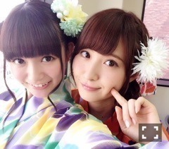

| 2015/06 22 Mon | ひめたん-OoO-その550 |
舞台「じょしらく」チームご
初日終わりましたー！！

防波堤手寅役 ひめたんです♡
手寅ちゃんが愛おしくて愛おしくて
演じるたびにどんどん
大好きになっていきます！
今日の感想はといいますと、まず
落語の当番でございました♪
ひめは何でも初日になることが
多いような気がするのは
気のせいなのかしら。笑
ちなみに落語を覚えるのは
大変だったけれど苦ではなかったです
しかも本番でやったやつが
今までで一番リラックスしてできた！
みなさんのリアクションが
あったからかな？救われました～
本番前ずっと滑舌の練習してました～
今日来てくださったみなさん
私の落語いかがでしたでしょうか？
そして残りのメンバーもまだまだ
落語頑張って練習しているので
これから来る方はお楽しみに♡
チームごが初日を迎えるのが
一番遅かったので
もう早く舞台に立ちたくて
みんなうずうずうずうずしてました。
私にとっては「ご」が一番！！
このメンバーが本当に大好きで
一緒にお芝居できることが幸せだし
安心できる4人。信頼しています。
稽古後も残って打ち合わせしたり、
不安な時は励ましあったり、
思ったことを遠慮せずに言い合える
そんな素敵な関係です。
チームワークはすでに固い。
でもまだまだ千秋楽まで乗り越えなきゃ
いけないことはきっとあります
残りの4公演でさらに深まるといいな。
そして、縦はチーム手寅。
同じ役を演じる者としてこっちも
助け合って頑張ってきました。
だから、私が私なりの手寅ちゃんを
追及できるのは2人のおかげたし
私もまた2人にとって
その役割ができていたら
いいなって思います。
初日からこんなに語ってたら
千秋楽どうなるんでしょう。笑
私たち「ご」にとっては残りの4公演、
さらにいい舞台にしていけるよう
みんなで頑張ります！
そして、15人みんなで力を合わせて
自分の公演がない日も
同じ舞台に立っている気持ちで
最後まで完走したいとおもいます！
月刊ヤングマガジン
発売中でございます！

じょしらくの
自分たちが演じさせていただくキャラと
同じような着物の色を着てるよ！
ひめのこのハムスターみたいなヘアは
本来のひめのアイコンである
ツインテールの雰囲気を残しつつ
でも手寅ちゃんはきっと
そんなことしないだろうなと悩み
どっちも譲歩できずに
結果丸めてみました(笑)

チームご
そして発売中のOVERTURE！
綾小路翔さんと乃木團が
なんと紙面で初共演を果たしました！
素敵なお話がたくさん聞けて
貴重な時間になりました( ˇωˇ )
改めて氣志團さんリスペクトです！
これからもっともっと
レベルアップして
さらに高みを目指そうね！乃木團！
らじらー！サンデー

カープ女子デビュー♡
これからまじで勉強します♡
ゲストは声優アーツに茅原実里さん
乃木坂46から井上小百合ちゃん！
さらに田畑藤本さんも登場されて
熱い放送をお届けしました～
さゆちゃんも同じ
チーム福神狩りになりました！
狩りますぞ～狩りますぞ～♪
仲の良いさゆちゃんなので
リラックスしてコーナーも出来たし
普段の2人のことも話せたり(´｡•ω•｡`)
今度は一泊の温泉旅行も
プランばっちり立てて行きましょう！
らじらー！にも遊びきてね♡
次回もおたより、Twitter
たくさんお待ちしています～！
最近質問コーナーできなくて
ごめんねm(_ _)m
そうそう、舞台の合間を縫って
ある撮影をしてきたんだけど
ほんとにみんなに見て欲しい！！
早く報告したいな～♡
(＊´・ω・＊)
コメント(1295)
2015/06/22 23:54